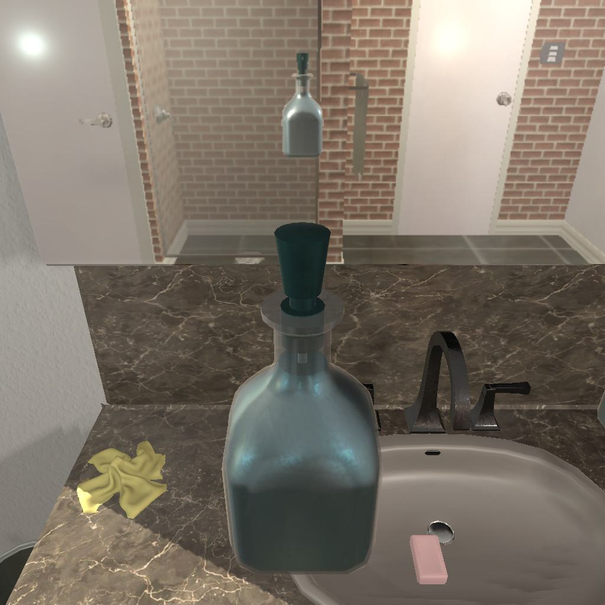

---------------------------------------------------------task: 27---------------------------------------------------------
--------------------------------------------------------------------------------------------------------------------------------------------------------------------
--------------------------------------------------------------------------------------------------------------------------------------------------------------------
Step:--------------------------------------------------------------------------15-------------------------------------------------------------------------------
----------------------------------------
VLM Prompt:
Image1:
**Instruction**
1. Analyze the provided image to identify all visible household objects, focusing on those relevant to the task description "find two soapbottle and put them in garbagecan."
2. Use the analysis of the image and the task hint "The agent must find an object of the desired type, pick it up, find the correct location to place it, put it down there, then look for another object of the desired type, pick it up, return to previous location, and put it down there with the other object." to answer the question: what is the most reasonable action in the choices for the task description "find two soapbottle and put them in garbagecan"?
4. Decide and write the answer using the template: The answer is: (i): , where i is the real number. If there is no desired object in the image, search every place based on **Initial Observation** to find the object. And if no one is exactly correct, choose a similar answer.
**Initial Observation**
You are in the middle of a room. Looking quickly around you, you can see countertop (1), sinkbasin (1-2), sink (1-2), garbagecan (1), drawer (1-2), toilet (1), handtowelholder (1)
**Answer Choices**
(1): go to sinkbasin 1
(2): go to garbagecan 1
(3): go to drawer 1
(4): go to drawer 2
(5): go to sink 2
(6): go to sinkbasin 2
(7): go to toilet 1
(8): go to handtowelholder 1
(9): put soapbottle 1 in/on sink 1
(10): clean soapbottle 1 with sinkbasin 1
(11): clean soapbottle 1 with sink 1
(12): clean soapbottle 1 with sink 2
(13): clean soapbottle 1 with sinkbasin 2
(14): examine sink 1
**Answer**
Let's think step by step by following the instructions.
----------------------------------------
----------------------------------------
Original Response:
The task is to find two soap bottles and put them in the garbage can. In the image, there is one visible soap bottle on the sink basin. According to the initial observation, there are two sink basins, and we should check both to find the desired objects.
The most reasonable first action would be to go to the sink basin where the visible soap bottle is located to pick it up. After picking up the first soap bottle, the agent would then need to search for the second one, potentially at the other sink basin or other locations mentioned in the initial observation.
Looking at the answer choices, the first step should be to go to the sink basin where the soap bottle is visible.
The answer is: (1): go to sinkbasin 1
----------------------------------------
----------------------------------------
>>> Refine Original VLM Response and Get Pure Action: go to sinkbasin 1
----------------------------------------
-----------------------------------------------------------------
Running time: 6.556685209274292 seconds
Total Money: 9.80495
-----------------------------------------------------------------
-----------------------------------------------------------------
Text Observation:You arrive at loc 1. On the sinkbasin 1, you see a faucet 1, a cloth 1, a soapbar 1, and a soapbottle 2.
-----------------------------------------------------------------
UNSUCCEED